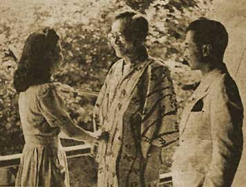

|
j
a v a s c r i p t |
June 30, 1943
Tribune: "Port Darwin bombed twice by Japan." The Japanese destroyed 27 planes in the air and three on the ground, losing none themselves except for three that "dived into enemy objectives."

Ailing Laurel with daughter, Natividad, and José Jr.
"Laurel Accepts PCPI Presidency." There's a picture of him wearing a Japanese robe, smiling with his daughter and son. |
|
|
|
|